File: 000420.gt.txt (if the image is defective, simply delete all Arabic text and the line will be excluded)
وفي جمادي الأخرة مات أبو القاسم سعيد بن أبي سعيد الجنابي
File: 000421.gt.txt (if the image is defective, simply delete all Arabic text and the line will be excluded)
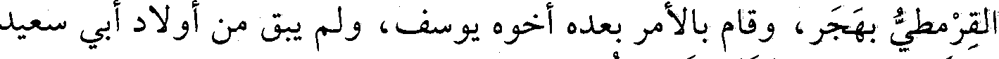
القرمطي بهجر، وقام بالأمر بعده أخوه يوسف، ولم يبق من أولاد أبي سعيد
File: 000422.gt.txt (if the image is defective, simply delete all Arabic text and the line will be excluded)
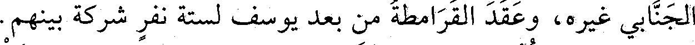
الجنابي غيره، وعقد القرامطة من بعد يوسف لستة نفر شركة بينهم.
File: 000423.gt.txt (if the image is defective, simply delete all Arabic text and the line will be excluded)

وجاءت كتب الحجاج بأن بني هلال اعترضتهم، فقتلوا خلقا كثيرا،
File: 000424.gt.txt (if the image is defective, simply delete all Arabic text and the line will be excluded)
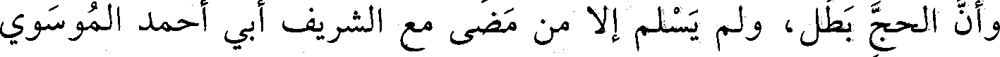
وأن الحج بطل، ولم يسلم إلا من مضى مع الشريف أبي أحمد الموسوي
File: 000425.gt.txt (if the image is defective, simply delete all Arabic text and the line will be excluded)
والد المرتضى، مضوا على طريق المدينة وحجوا، ولم يكادوا.
File: 000426.gt.txt (if the image is defective, simply delete all Arabic text and the line will be excluded)
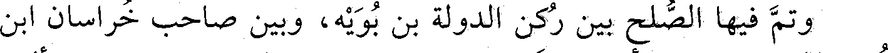
وتم فيها الصلح بين ركن الدولة بن بويه، وبين صاحب خراسان ابن
File: 000427.gt.txt (if the image is defective, simply delete all Arabic text and the line will be excluded)
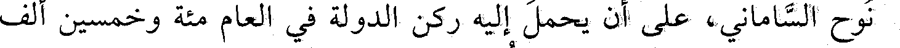
نوح الساماني، على أن يحمل إليه ركن الدولة في العام مائة وخمسين ألف
File: 000428.gt.txt (if the image is defective, simply delete all Arabic text and the line will be excluded)
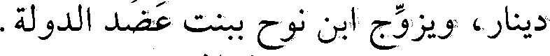
دينار، ويزوج ابن نوح ببنت عضد الدولة.
File: 000429.gt.txt (if the image is defective, simply delete all Arabic text and the line will be excluded)
سنة اثنتين وستين وثلاث مئة
File: 000430.gt.txt (if the image is defective, simply delete all Arabic text and the line will be excluded)
فيها حشدت الروم، لعنهم الله، وأقبلوا في عدد وعدة، فأخذوا
File: 000431.gt.txt (if the image is defective, simply delete all Arabic text and the line will be excluded)
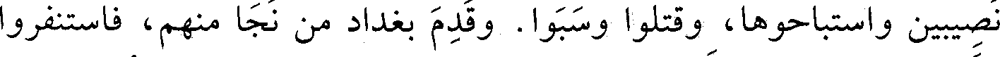
نصيبين واستباحوها، وقتلوا، وسبوا. وقدم بغداد من نجا منهم، فاستنفروا
File: 000432.gt.txt (if the image is defective, simply delete all Arabic text and the line will be excluded)
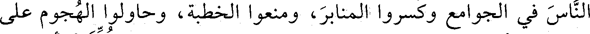
الناس في الجوامع وكسروا المنابر، ومنعوا الخطبة، وحاولوا الهجوم على
File: 000433.gt.txt (if the image is defective, simply delete all Arabic text and the line will be excluded)
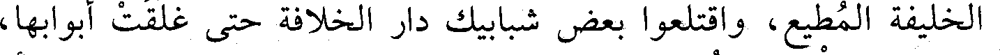
الخليفة المطيع، واقتلعوا بعض شبابيك دار الخلافة حتى غلقت أبوابها،
File: 000434.gt.txt (if the image is defective, simply delete all Arabic text and the line will be excluded)
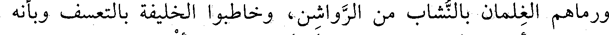
ورماهم الغلمان بالنشاب من الرواشن، وخاطبوا الخليفة بالتعسف وبأنه
File: 000435.gt.txt (if the image is defective, simply delete all Arabic text and the line will be excluded)
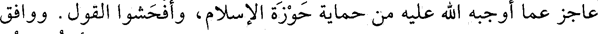
عاجز عما أوجبه الله عليه من حماية حوزة الإسلام، وأفحشوا القول. ووافق
File: 000436.gt.txt (if the image is defective, simply delete all Arabic text and the line will be excluded)
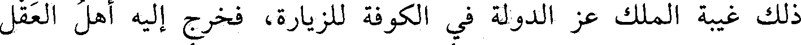
ذلك غيبة الملك عز الدولة في الكوفة للزيارة، فخرج إليه أهل العقل
File: 000437.gt.txt (if the image is defective, simply delete all Arabic text and the line will be excluded)
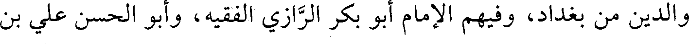
والدين من بغداد، وفيهم الإمام أبو بكر الرازي الفقيه، وأبو الحسن علي بن
File: 000438.gt.txt (if the image is defective, simply delete all Arabic text and the line will be excluded)
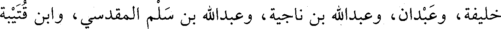
خليفة، وعبدان، وعبدالله بن ناجية، وعبدالله بن سلم المقدسي، وابن قتيبة
File: 000439.gt.txt (if the image is defective, simply delete all Arabic text and the line will be excluded)
العسقلاني. ودرس الفقه بمصر على منصور بن إسماعيل الفقيه.
File: 000440.gt.txt (if the image is defective, simply delete all Arabic text and the line will be excluded)
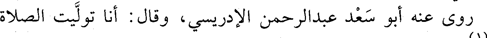
روي عنه أبو سعد عبدالرحمن الإدريسي، وقال: أنا توليت الصلاة
File: 000441.gt.txt (if the image is defective, simply delete all Arabic text and the line will be excluded)
عليه(1) .
File: 000442.gt.txt (if the image is defective, simply delete all Arabic text and the line will be excluded)
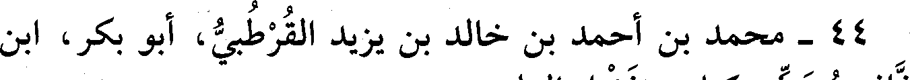
44 - محمد بن أحمد بن خالد بن يزيد القرطبي، أبو بكر، ابن
File: 000443.gt.txt (if the image is defective, simply delete all Arabic text and the line will be excluded)
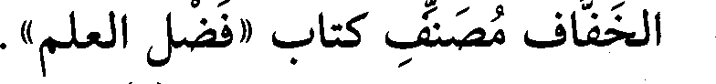
الخفاف مصنف كتاب «فضل العلم» .
File: 000444.gt.txt (if the image is defective, simply delete all Arabic text and the line will be excluded)
له رواية عن أبيه وغيره(2) .
File: 000445.gt.txt (if the image is defective, simply delete all Arabic text and the line will be excluded)
45 - محمد بن أحمد بن علي بن شاهويه، أبو بكر الفارسي
File: 000446.gt.txt (if the image is defective, simply delete all Arabic text and the line will be excluded)
الفقيه الشافعي، قاضي بلاد فارس.
File: 000447.gt.txt (if the image is defective, simply delete all Arabic text and the line will be excluded)
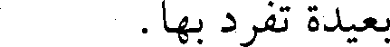
بعيدة تفرد بها.
File: 000448.gt.txt (if the image is defective, simply delete all Arabic text and the line will be excluded)
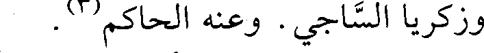
وزكريا الساجي. وعنه الحاكم(3) .
File: 000449.gt.txt (if the image is defective, simply delete all Arabic text and the line will be excluded)
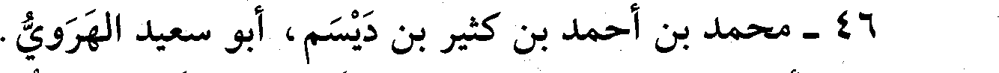
46 - محمد بن أحمد بن كثير بن ديسم، أبو سعيد الهروي.
To Save: `Ctrl+s`, make sure to choose `Webpage, complete`!